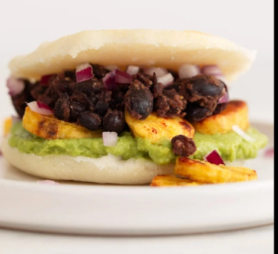

Arepas Rellenas
Una receta tradicional con un toque moderno.
Leer artículoVolver a inicio
Una receta tradicional con un toque moderno.
Leer artículoPostre clásico para disfrutar en familia.
Leer artículoFresco y nutritivo para las mañanas.
Leer artículoDelicioso y fácil de preparar.
Leer artículo
Sabores latinos llenos de aroma.
Leer artículo
Un clásico refrescante y ligero.
Leer artículoCrujientes y llenos de sabor.
Leer artículo
Perfecta para noches frías.
Leer artículo
Un aperitivo crujiente y sabroso.
Leer artículoRellenos variados para todos los gustos.
Leer artículo
Ligera y nutritiva para el almuerzo.
Leer artículoFácil y rápida para días de calor.
Leer artículo
Preparada en minutos para emergencias culinarias.
Leer artículoFáciles, saludables y deliciosas para toda la familia.
Leer artículo
Una opción vegetariana llena de proteína y sabor.
Leer artículo
Refrescante y natural, sin azúcares añadidos.
Leer artículo
Una comida completa para compartir.
Leer artículoFáciles, crujientes y perfectos para los niños.
Leer artículoAprende a hacer pan casero de manera sencilla.
Leer artículo
Opciones saludables para desayunos energéticos.
Leer artículoUna salsa cremosa que encanta a todos.
Leer artículo
Una versión más saludable de un clásico.
Leer artículo
Sencillo y sabroso, ideal para cenas.
Leer artículo
Fusión de sabores dulces y salados.
Leer artículoBase perfecta para muchas recetas.
Leer artículo
Una opción reconfortante y nutritiva.
Leer artículoRica en proteínas y muy saciante.
Leer artículoCaldo nutritivo para días fríos.
Leer artículoLigera y llena de vitaminas.
Leer artículoFáciles de preparar y muy sabrosos.
Leer artículoUn desayuno dulce para disfrutar.
Leer artículoPerfectos para un desayuno energético.
Leer artículo